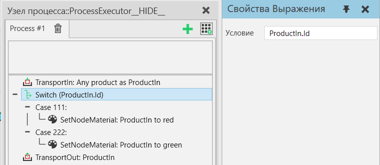
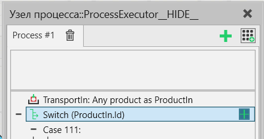
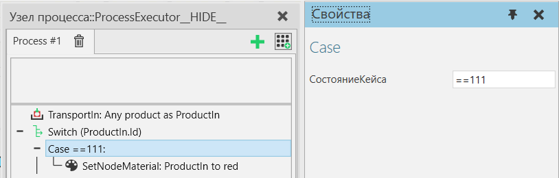
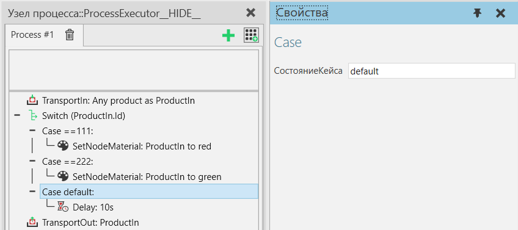

Переключатель Случаев |
|
Оператор Переключатель Случаев (Switch-Case) позволяет выполнить одну из предопределенных областей действия на основе оцененного значения выражения Условия. Значение каждого случая определяет тест для значения условия и первый случай, в котором тест пройден, т.е. оценивается как True, выполняется. Область действия default выполняется, если ни один другой тест случая не проходит. Состояние переключателяВыберите оператор switch и определите выражение условия. Вычисленное значение выражения сравнивается с условиями случая. В выражении могут использоваться как статические переменные, так и переменные времени выполнения.  Добавить случайЧтобы добавить новый случай (case), укажите оператор переключения в подпрограмме процесса, затем щелкните правой кнопкой мыши и выберите Добавить случай.  Состояние кейсаВыберите случай (case) и определите значение свойства СостояниеКейса. Это строковое свойство, которое преобразуется в оператор сравнения и выражение фактического значения. Синтаксис
Если оператор опущен, используется оператор равенства (==). Выражение может иметь несколько операторов и переменных. Смотрите приоритет оператора. Выражение фактического значения может быть либо постоянным значением, либо выражением, состоящим из переменных.  Случай по умолчаниюОдин из случаев может быть указан как случай по умолчанию, который будет выполняться, если никакое другое условие случая не будет принято. Это делается путем ввода "default" в условие регистра (без учета регистра).  Свойства
|